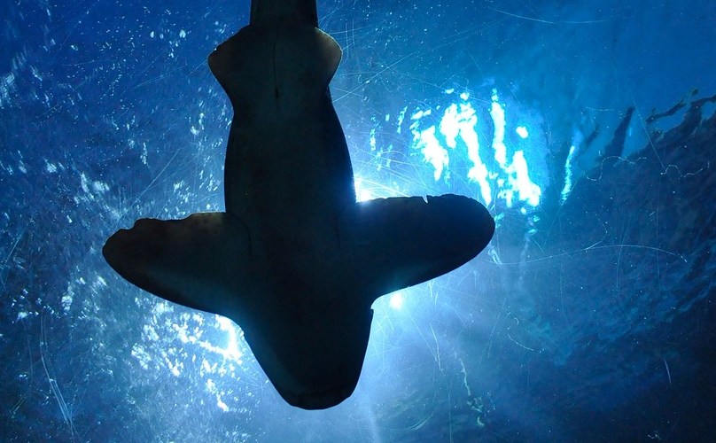
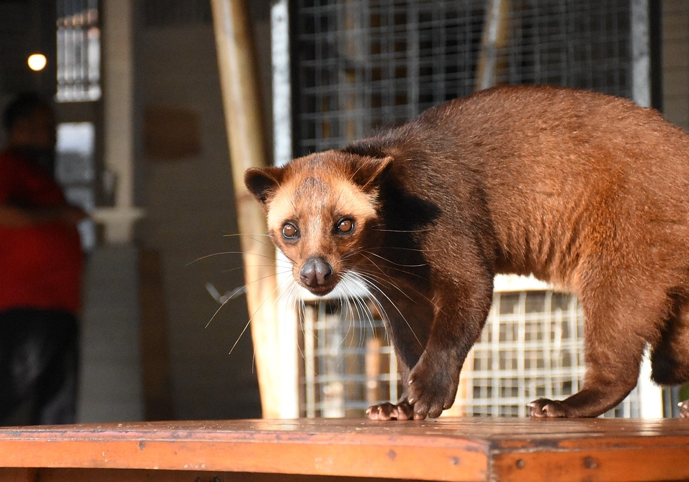
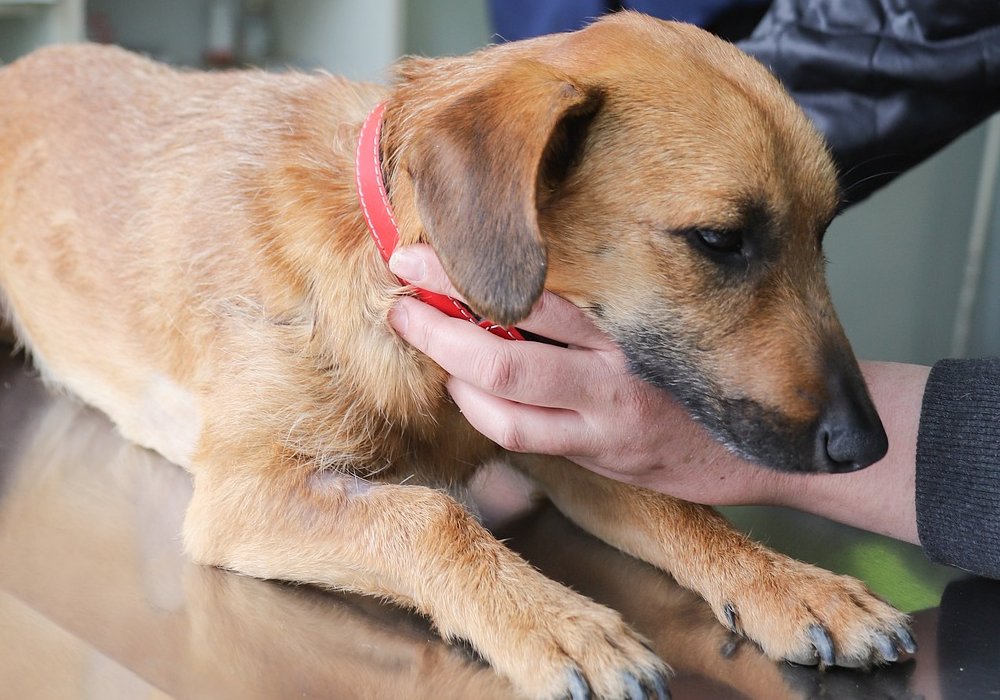

Guest Speaker: Insight to the life of a K9 Unit Handler
- Background to working dogs
- Duties of the k9 handler

Guest Speaker: Insight to the life of a Marine Conservationist - Sharks/Turtle Edition!
- Fun facts on animals in the ocean
- Introduction to sharks/turtles
- what does a Conservationist do?
- How you can help
Guest Speaker: Insight to the life of a Environmental Conservationist
- What happens if we see wildlife (e.g., otters ) intruding into our space?
- Introduction to Singapore's biodiversity, specifically wildlife
- what does a Conservationist do?
- How you can help


Guest Speaker: Insight to the life of a Veterinary Technician
- Introduction to veterinary care
- What does a vet tech do?
- How to be involved
Contact us at hello@animalwelfareacademy.com for more information.
Additional points to note
Sometimes, AWA brings live animals onsite during animal interaction sessions. Animals are sentient individuals with their own personalities- with likes, dislikes, and fears. AWA reserves the right to remove any animal from the premises should the animal be feeling (but not limited to): stressed, angry, and/or scared. This protects both the participants and the animals so we can ensure a safe environment for both parties.